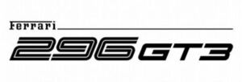

Trade Mark Journal No.2025/048 28 November 2025
WO0000001886615 (9,12,25,28)
Office of origin: Italy

The trademark consists of an imprint depicting the wording FERRARI 296 GT3 in fancy characters and arranged on two lines, the component 296 being of larger dimensions and profiled both internally and externally, the central horizontal stroke of the numerals 9 and 6 being interrupted at the vertical stroke of each numeral, said number being followed on the right by the component GT3, both elements 296 and GT3 having a slight inclination to the right, the verbal expression FERRARI being placed above the number 2 and having the letter F with the upper stroke extending to surmount the remaining letters except for the final I, the latter being surmounted by a small rectangular figure and flanked at the base by a segment that extends horizontally to the right to surmount the underlying components 96 and GT3.
- Class 9
- Recorded programs for hand-held games with liquid crystal displays; electronic game software for handheld electronic devices; electronic game software for cellular phones; computer game software; computer game software, downloadable; recorded programs for electronic games; games cartridges for use with electronic games apparatus; computer game cartridges; video game cartridges; disks for electronic games; video game discs; computer game cassettes; video game cassettes; joysticks for use with computers, other than for video games; joystick chargers; memory cards for video game machines; simulators for the steering and control of vehicles; sports training simulators; steering wheels for computers, other than game controlling apparatus; earphones used for connecting to hand-held games; headsets for playing video games; ear pads for headphones; stands adapted for laptops; mouse pads; downloadable graphics for mobile phones; battery chargers for cellular phones; cell phone battery chargers for use in vehicles; battery chargers for smartphones; smartphone battery chargers for use in vehicles; in-car telephone handset cradles; downloadable emoticons for mobile phones; gimbals for smartphones; battery chargers for smartwatches; battery chargers for smartwatches for use in vehicles; wrist rests for use with computers; protective helmets; headgear being protective helmets; fireproof automobile racing suits for safety purposes; face-shields for protection against accidents, irradiation and fire; gloves for protection against accidents; balaclavas for protection against accidents, irradiation and fire; shoes for protection against accidents, irradiation and fire; boots for protection against accidents, irradiation and fire; protection devices for personal use against accidents; garments for protection against accidents, irradiation and fire; garments for protection against fire; speed checking apparatus for vehicles; speedometers for vehicles; electric wire harnesses for automobiles; rearview cameras for vehicles; steering apparatus, automatic, for vehicles; automatic indicators of low pressure in vehicle tyres; voltage regulators for vehicles; mileage recorders for vehicles; kilometer recorders for vehicles; hands free kits for cellular phones; electric locks for vehicles; electronic keys for automobiles; control units of central locking systems for vehicles; navigation apparatus for vehicles [on-board computers]; electronic accumulators for vehicles; accumulators, electric, for vehicles; parking sensors for vehicles; vehicle radios; car televisions; remote control apparatus; starter cables for motors; thermostats for vehicles; vehicle breakdown warning triangles; airbag deactivation switches for automobiles; batteries for vehicles; car antennas; head-up display apparatus for vehicles; artificial intelligence software for vehicles; electronic data recorders for vehicles; vehicle locating apparatus; computer software for mobile applications that enable interaction and interface between vehicles and mobile devices; wheel alignment meters; magnets; decorative magnets; lanyards especially adapted for holding cellular phones, MP3 players, cameras, video cameras, eyeglasses, sunglasses, magnetic encoded cards; cases especially made for photographic apparatus and instruments; cases adapted for CD players; cases adapted for DVD players; cases adapted for MP3 players; audio recordings; video recordings; integrated circuit cards [smart cards]; photocopiers; image scanners; printers for use with computers; ticket dispensing terminals, electronic; electronic payment terminals, money dispensing and sorting devices; coin-operated mechanisms; magnetizers and demagnetizers; apparatus, instruments and cables for electricity; apparatus and instruments for accumulating and storing electricity; photovoltaic cells; electric and electronic components; electric cables and wires; electrical circuits and circuit boards; lasers, not for medical purposes; safety, security, protection and signalling devices; alarms and warning equipment; access control systems; diving equipment; sensors and detectors; measuring, counting, alignment and calibrating instruments; instrumentation simulators; downloadable virtual goods, namely, computer programs featuring cars, sports cars, racing cars, vehicles, electric vehicles, electric motors and engines, structural parts of automobiles and vehicles, spare parts and accessories for automobiles and vehicles, bicycles, clocks, wristwatches, pocket watches, stationery articles, clothing, footwear, headgear, eyewear and eyewear accessories, bags, sport bags, rucksacks, sports equipment, art, toys, video games and their accessories for use online and in online virtual worlds; downloadable virtual goods, namely, downloadable image files featuring virtual goods; recorded digital files featuring virtual goods; downloadable digital cars, sports cars, racing cars, vehicles, electric vehicles, electric motors and engines, structural parts of automobiles and vehicles, spare parts and accessories for automobiles and vehicles, bicycles, clocks, wristwatches, pocket watches, stationery articles, clothing, footwear, headgear, eyewear and eyewear accessories, bags, sport bags, rucksacks, sports equipment, art, toys, video games and their accessories, all the above mentioned goods authenticated by non-fungible tokens [NFTs]; downloadable interactive characters, avatars and skins; downloadable digital files authenticated by non-fungible tokens [NFTs] based on blockchain technology; downloadable digital files authenticated by non-fungible tokens [NFTs] and application tokens; downloadable digital files authenticated by non-fungible tokens [NFTs] featuring collectible images and videos; downloadable collectible images and videos authenticated by non-fungible tokens [NFTs]; downloadable collectible images authenticated by non-fungible tokens [NFTs] used with blockchain technology; digital tokens used with blockchain technology in the nature of data; digital tokens used with blockchain technology in the nature of data to represent a collectible item; downloadable digital files authenticated by nonfungible tokens [NFTs] using blockchain technology to represent a collectible item; downloadable digital files authenticated by non-fungible tokens [NFTs], enabling the authenticity, ownership, availability and trading of digital assets and creations on computer software platforms [software]; encoded record tokens; magnetically encoded record tokens; recorded tokens being magnetically encoded gift cards; gift tokens being encoded gift cards; gift tokens being magnetically encoded gift cards; prerecorded gift tokens being pre-recorded gift cards; pre-recorded tokens being pre-recorded gift cards; security tokens [encryption devices]; encoded gift vouchers; pre-recorded gift vouchers; utility tokens being digital assets using blockchain technology; fan tokens being digital assets using blockchain technology, namely digital objects for voting in team polls, predicting results in competitions and races, check-in for competitions and races, playing games, choosing drivers; downloadable multimedia files containing artwork, texts, audio and video authenticated by non-fungible tokens [NFTs]; downloadable multimedia files containing artworks, audio files, texts and videos relating to automobiles authenticated by non-fungible tokens [NFTs]; downloadable audio and video recordings authenticated by non-fungible tokens [NFTs]; downloadable image files authenticated by non-fungible tokens [NFTs]; downloadable digital media, downloadable digital assets, downloadable digital collectibles, downloadable digital tokens and downloadable digital files authenticated by non-fungible tokens [NFTs]; downloadable digital files authenticated by non-fungible tokens [NFTs]; downloadable digital files containing collectible images, texts, videos and/or music; downloadable music files authenticated by nonfungible tokens [NFTs]; downloadable graphics authenticated by non-fungible tokens [NFTs]; downloadable digital event tickets and digital documents; downloadable digital materials, namely, audio-visual content, videos, films, multimedia files, and animation; downloadable software for receiving and accessing non-fungible tokens; downloadable software for spending and trading non-fungible tokens; downloadable computer software for managing cryptocurrency transactions using blockchain technology; computer software for blockchain technology and cryptocurrency; downloadable computer software for creating, managing, storing, accessing, sending, receiving, exchanging, validating and selling digital assets, digital collectibles, digital tokens and non-fungible tokens [NFTs]; downloadable software for use in displaying, monetizing, buying, selling, trading, clearing, confirming digitized assets authenticated by non-fungible tokens [NFTs]; augmented reality computer hardware; augmented reality software; virtual reality software; augmented reality game software; augmented reality software for use in mobile devices; games software; virtual reality game software; downloadable software for providing access to an online virtual environment; downloadable computer software for the creation, production and modification of digital animated and non-animated designs and characters, avatars, digital overlays and skins for access and use in online environments, virtual online environments, and extended reality virtual environments; downloadable software and mobile application software providing a virtual marketplace; downloadable computer software for interactive games for use via a global computer network and through various wireless networks and electronic devices; downloadable software for accessing and streaming multimedia entertainment content; downloadable software for engaging in social networking and interacting with online communities; downloadable cryptographic keys for receiving and spending cryptocurrency; downloadable computer software relating to digital goods; downloadable software in the nature of a mobile application to browse and perform electronic transactions of retail consumer goods; virtual reality glasses; augmented reality glasses; augmented reality headsets; virtual reality headsets; head-mounted augmented reality displays; virtual reality gloves; virtual reality helmets; electronic communication devices for playing virtual reality games; virtual reality controllers; electronic numeric displays; hand-held electronic dictionaries; sports whistles; teaching robots; telepresence robots; wah-wah pedals; devices for the projection of virtual keyboards; climate control digital thermostats; dry suits; gimbals for digital cameras; scientific, research, surveying, photographic, cinematographic, weighing, measuring, signalling, detecting, testing, inspecting, life-saving and teaching apparatus and instruments; apparatus and instruments for conducting, switching, transforming, accumulating, regulating or controlling the distribution or use of electricity; mechanisms for coin-operated apparatus; cash registers, calculating devices; diving suits, divers' masks, ear plugs for divers, nose clips for divers and swimmers, gloves for divers, breathing apparatus for underwater swimming; fireextinguishing apparatus.
- Class 12
- Automobiles; cars; racing cars; sports cars; motor cars; self-driving cars; hydrogen-fueled cars; electric vehicles; hybrid vehicles; autonomous land vehicles; sports utility vehicles; trailers [vehicles]; physical automobiles, physical cars, physical racing cars, physical sports cars, physical vehicles, authenticated by non-fungible tokens [NFTs]; structural parts of automobiles, racing cars, sports cars, land, air and water vehicles, except tyres, pneumatic tyres, casings for pneumatic tyres, inner tubes for pneumatic tires; physical structural parts of automobiles, racing cars, sports cars, land, air and water vehicles, except tyres, pneumatic tyres, casings for pneumatic tyres, inner tubes for pneumatic tires, authenticated by non-fungible tokens [NFTs]; spare parts and accessories for automobiles, racing cars, sports cars, land, air and water vehicles, except tyres, pneumatic tyres, casings for pneumatic tyres, inner tubes for pneumatic tires; physical spare parts and physical accessories for automobiles, racing cars, sports cars, land, air and water vehicles, except tyres, pneumatic tyres, casings for pneumatic tyres, inner tubes for pneumatic tires, authenticated by non-fungible tokens [NFTs]; motors, electric, for land vehicles; engines for land vehicles; motors for land vehicles; vehicle seats; racing seats for automobiles; seat covers for vehicles; vehicle covers [shaped]; steering wheels for vehicles; covers for vehicle steering wheels; dashboards for automobiles; fitted dashboard covers for vehicles; doors for automobiles; handles for automobile doors; covers for baggage compartments [parts of vehicles]; upholstery for vehicles; interior trim for automobiles; sun-blinds adapted for automobiles; sun visors for automobiles; head-rests for vehicle seats; arm rests for vehicle seats; ski carriers for cars; cigar lighters for automobiles; luggage carriers for vehicles; direction signals for vehicles; automobile seat cushions; clips adapted for fastening automobile parts to automobile bodies; bodies for vehicles; vehicle chassis; hoods for vehicles; vehicle bumpers; driving motors for land vehicles; mudguards; rearview mirrors; windows for vehicles; windscreens; windscreen wipers; brakes for vehicles; fuel tanks for land vehicles; caps for vehicle fuel tanks; horns for vehicles; crankcases for land vehicle components, other than for engines; automobile sunroofs; tops for land vehicles; ashtrays for automobiles; glass holders for automobiles; cup holders for vehicles; dashboard drawers [parts of automobiles]; dashboard hatches [parts of automobiles]; glove compartments for automobiles; glove boxes for automobiles; seat back organizers specially adapted for use in cars; vehicle bonnet pins; vehicle hood pins; bearings [parts of vehicles]; car back seat organizers; bicycles, parts and accessories thereof included in this class, except tyres, pneumatic tyres, casings for pneumatic tyres, inner tubes for pneumatic tires; electric bicycles; trailers for transporting bicycles; motorcycles; electric motorcycles; cycles, parts and accessories thereof included in this class, except tyres, pneumatic tyres, casings for pneumatic tyres, inner tubes for pneumatic tires; tricycles, parts and accessories thereof included in this class, except tyres, pneumatic tyres, casings for pneumatic tyres, inner tubes for pneumatic tires; push scooters [vehicles]; kick sledges; sleighs [vehicles]; safety belts for vehicle seats; security harness for vehicle seats; air bags [safety devices for automobiles]; safety seats for children, for vehicles; pet safety seats for use in vehicles; anti-theft devices for vehicles; prams; covers for prams; pushchairs; pushchair covers; carrycots [parts of prams and pushchairs], namely carrycots for use with prams and pushchairs; bags adapted for prams and pushchairs; fitted footmuffs for prams and pushchairs; pet strollers; parachutes; two-wheeled trolleys; human-powered trolleys and carts; ski lifts; golf buggies; self-balancing scooters; self-balancing boards; self-balancing electric unicycles; water scooters [personal watercraft]; tow trucks; dining cars; photography drones; surveillance towers specially adapted for vehicles; pneumatic or hydraulic linear actuators for land vehicles; motorized skateboards; snow-going vehicles; mobility vehicles; vehicles; apparatus for locomotion by land, air or water.
- Class 25
- Jackets [clothing]; ski jackets; wind-resistant jackets; down jackets; bomber jackets; parkas; blazers; overcoats; coats; dust coats; raincoats; trench coats; vests; padded vests; cardigans; pullovers; sweaters; shirts; tee-shirts; polo shirts; sport shirts; blouses; sweatshirts; jerseys [clothing]; sports jerseys; trousers; shorts; bermuda shorts; jeans; skirts; overalls; jogging suits; training suits; track suits; automobile racing suits not in the nature of protective clothing; suits; dresses; singlets; braces [suspenders]; wristbands [clothing]; aprons [clothing]; combinations [clothing]; clothing for gymnastics; leggings [leg warmers]; leggings [trousers]; pockets for clothing; collars [clothing]; ready-made clothing; rainwear; waterproof clothing; golf clothing, other than gloves; motorists' clothing; ski clothing; ski suits; snowsuits; body warmers; knee warmers [clothing]; knitwear [clothing]; sweat bands; gaiters; pocket squares; rash guards; beach clothes; bathing suits; bathing caps; swimming costumes; bathing drawers; bathing trunks; bikinis; bath robes; underwear; slips [undergarments]; pyjamas; dressing gowns; nightgowns; girdles; clothing for children; babies' clothing; babies' overalls; baby bibs, not of paper; children's and infants' cloth bibs; bibs, not of paper; romper suits for children; romper suits for babies; rompers; layettes [clothing]; baby sleepwear; socks; stockings; tights; hosiery; shoes; sports shoes; gymnastic shoes; sneakers; slippers; mules; sandals; boots; footwear for sports; ski boots; after ski boots; bags specially adapted for ski boots; flip-flops; clogs; bath sandals; bath slippers; soles for footwear; footwear uppers; fittings of metal for footwear; inner soles; tips for footwear; heelpieces for footwear; heels; non-slipping devices for footwear; welts for footwear; shoe straps; shoe inserts for non-orthopedic purposes; toe caps [parts of footwear]; tongues or pullstraps for shoes and boots; overshoes; galoshes; gaiter straps; footmuffs, not electrically heated; neckwear; scarves; bandanas [neckerchiefs]; foulards [clothing]; neckties; gloves [clothing]; driving gloves; ski gloves; belts [clothing]; muffs [clothing]; mittens; fur stoles; shawls; sashes for wear; money belts [clothing]; caps being headwear; hats; cap peaks; visors being headwear; berets; headbands [clothing]; hoods [clothing]; shower caps; sleep masks; balaclavas; helmet liners [headwear]; sun visors [headwear]; ear muffs [clothing]; masks for protection against the cold; clothing incorporating digital connections; clothing incorporating infant carriers; clothing incorporating slings for carrying infants; smart clothing equipped with wireless data communication devices; smart clothing with built-in biochip sensors; clothing incorporating LEDs; sportswear incorporating digital sensors; gloves with conductive fingertips that may be worn while using hand-held electronic touch screen devices; thermal gloves for touchscreen devices; footwear incorporating digital connections; smart footwear equipped with wireless data communication devices; smart footwear with built-in biochip sensors; headwear incorporating digital connections; physical clothing, physical footwear, physical headwear, authenticated by non-fungible tokens [NFTs]; clothing, footwear, headwear.
- Class 28
- Toys; amusement apparatus adapted for use with an external display screen or monitor; apparatus for games adapted for use with an external display screen or monitor; video game machines for use with televisions; video game machines; television game sets, namely, games adapted for use with television receivers; apparatus for games; amusement machines, automatic and coin-operated; amusement machines, other than those adapted for use with television sets and with an external display screen or monitor; pocket-sized apparatus for playing video games; pocket-sized video games; pocket-sized electronic games; hand-held video games; portable electronic games; portable electronic toys; hand-held units for playing video games; stand alone video game machines; computer game equipment, namely computer game joysticks and game controllers for computer games; electronic games consoles adapted for use with an external display screen or monitor; controllers for game consoles; joysticks for video games; bags specially adapted for hand-held video game apparatus; bags specially adapted for video games consoles; games consoles; gamepads for use with game consoles; handheld game consoles; handheld video game consoles; video game consoles; video game consoles for use with an external display screen or monitor; protective carrying cases specially adapted for video game consoles for use with an external display screen or monitor; mouse for video game machines; gaming keyboards; toy models; models featuring racing scenes [toys]; models featuring racing scenes for collectors; scale model racing cars [toys]; scale model racing cars for collectors; scale model racing vehicles [toys]; scale model racing vehicles for collectors; scale model cars [toys]; scale model cars for collectors; scale model vehicles [toys]; scale model vehicles for collectors; resin models featuring racing scenes [toys]; scale model drivers; scale model pit crews; physical model cars, being toys, authenticated by non-fungible tokens [NFTs]; physical model vehicles, being toys, authenticated by non-fungible tokens [NFTs]; physical model cars for collectors, authenticated by non-fungible tokens [NFTs]; physical model vehicles for collectors, authenticated by non-fungible tokens [NFTs]; racing car model silhouettes, being scale model racing cars; racing car model silhouettes, being stylized scale reproductions of racing cars for ornamental purposes; full-size toy car replicas; full-size toy vehicle replicas; full-size toy steering wheel replicas; vehicle construction toys; toy vehicle trucks; toy vehicles; toy racing car tracks; toy steering wheels; pull-along toy vehicles; toy trucks with cars; toy pedal karts for kids; ride-on toys; ride-on toy cars for children in pedal version or working with batteries; toy cars for children in pedal version or working with batteries; ride-on toy vehicles, electric, reproducing the original models; toy go-karts for children in pedal version or working with batteries; tricycles for infants [toys]; push scooters [toys]; balance bicycles [toys]; race pit-stops [toys]; race tracks [toys]; toy trucks; toy trailers for transporting cars; radio-controlled toy vehicles; radio-controlled toy cars; toy gasoline service stations; toy car garages; toy car showrooms; toy telephones; plush toys; toy plush steering wheels; teddy bears; playing cards; toys designed to be attached to car seats; toys designed to be attached to car back seats; padded toys for seatbelts; streetboards; ankle guards [sports articles]; ankle pads for sports use; ankle guards for skating; ankle pads for skating; abdomen protectors for sports; golf bag carts; sticks for fans and for entertainment [novelty items]; toy sticks for fans and for entertainment shaped as flags [novelty items]; toy lanyards; sports articles and equipment; hunting equipment, namely hunting tackle, bows and lures; fishing equipment; flippers for swimming; floats for swimming; swimming belts; swimming gloves; swimming jackets; inflatable armbands for swimming; swimming floats for recreational use; swimming kick boards; party poppers; streamers [party novelties]; novelties for parties, dances [party favors, favours]; balloons [party novelties]; paper party hats; decorations for artificial Christmas trees; fairground and playground apparatus; portable games and toys incorporating telecommunication functions; toy dough; party poppers [party novelties]; games, toys and playthings; video game apparatus; gymnastic and sporting articles; decorations for Christmas trees.
FERRARI S.P.A.
Representative: Dr. Modiano & Associati SpA, Via Meravigli 16, I-20123 Milano, ITALY